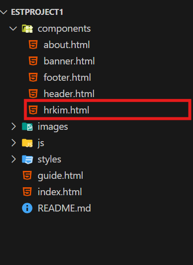

🌟 컴포넌트 추가
1. components 폴더에 컴포넌트 파일을 생성합니다.
예시:
2. index.html에 id 생성
index.html 파일에 컴포넌트를 렌더링할 위치를 지정할 div 요소를 추가합니다.
예시:
1 2 3 4 5 6 7 8 9 10 11 12 13 14 | <!DOCTYPE html> <html lang="en"> <head> ... </head> <body> <main> ... <!-- hrkim --> <section id="hrkim"></section> </main> </body> </html> | cs |
3. js/index.js에서 fetch로 컴포넌트 로드
index.js 파일에서 fetch()를 사용하여 해당 HTML 파일을 불러오고, innerHTML을 이용해 지정된 id에 컴포넌트를 삽입합니다.
예시:
1 2 3 4 | // hrkim.html 불러오기 fetch("components/hrkim.html") .then((response) => response.text()) .then((data) => (document.getElementById("hrkim").innerHTML = data)); | cs |